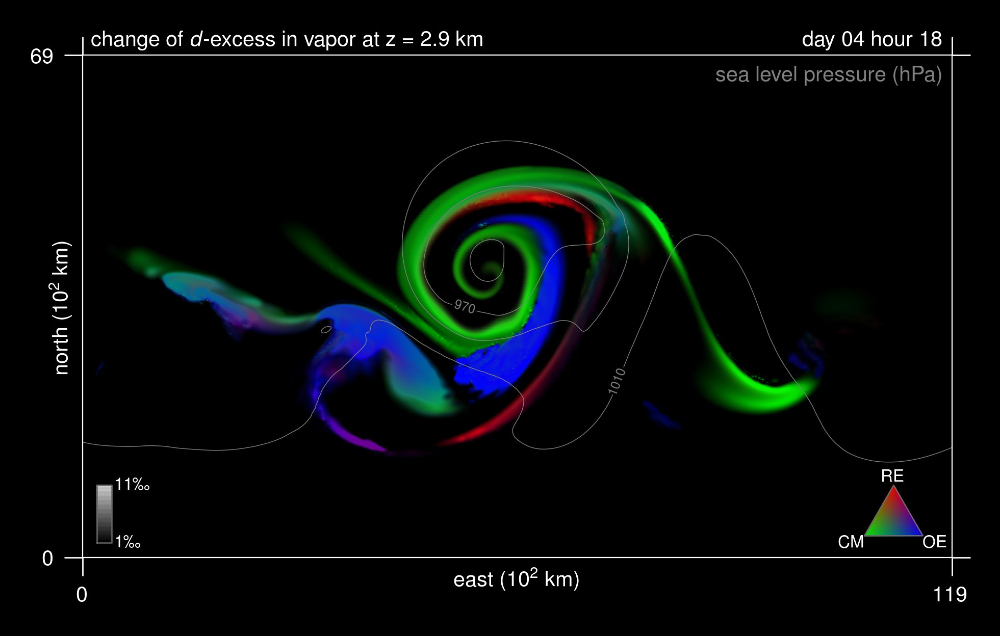

Entry 8¶
The relative influence of three meteorological processes on the deuterium excess in an extratropical cyclone¶
Marina Duetsch, Stephan Pfahl, Heini Wernli
This figure shows the relative influence of three processes - cloud microphysics (CM), ocean evaporation (OE), and rain evaporation and equilibration (RE) – on the deuterium excess (short: d-excess) in an idealized extratropical cyclone.
The d-excess describes the concentrations of the two heavy stable water isotopes HD16O and H218O in relation to the light stable water isotope H216O. Due to its sensitivity to isotopic fractionation (especially, nonequilibrium) effects, which occur during phase changes involving the vapor phase and are caused by the different mass and symmetry of the water isotopes, it can be used as a natural tracer of meteorological processes in the global water cycle. To fully exploit this potential, a good understanding of the imprint of these processes on d-excess is required. With the help of (the RGB triangle and) three dynamically identical simulations with an isotope-enabled numerical weather model, where isotopic fractionation was successively switched off during cloud microphysics, rain evaporation and equilibration, and ocean evaporation, the figure illustrates how these three processes shape the d-excess pattern in an extratropical cyclone at 2.9km height in the first 4 days and 18 hours of simulation time. A mixture of colors represents a mixture of processes, and brighter colors indicate a larger change of d-excess in total (maximum brightness: >11permil, black: <1permil). Sea level pressure is shown in gray contours. At the warm front and along the bent-back warm front (the “snail” over the sea level pressure minimum) of the cyclone, cloud microphysics is clearly the dominant process. Ocean evaporation has the largest impact in the cold sector, and rain evaporation and equilibration is important directly at the cold front.
Code and data: 1